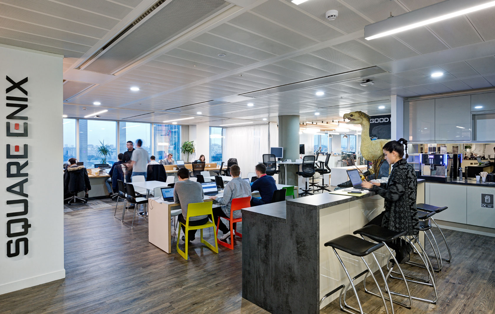

Jeu vidéo
Comme projet pour le bac en ISN, le choix évident est de faire un mini-jeux, mais sans avoir vu de notions en programmation python, aucune idée réellement précise ne peut être définit.
Un type de jeu potentiellement réalisable serait un jeu de tic-tac-toe, jouable à 2 ou contre un bot, avec une fonction aléatoire pour le choix de la case du bot.
un jeu de type plateforme supposément serait réaisable si les graphismes et animations restent rudimentaire.

Programme Raspberry Pi ou Arduino
Une autre idée de projet pourrait d'utiliser une interface physique tel que les modules Arduino, ou encore Raspberry Pi, qui utilise le language python pour fonctionner et réaliser des actions ou faire fonctionner certains logiciels.
Avec une board Arduino il est possible de faire une véhicule se déplacant selon un algorithme, et avec une board Raspberry Pi, il est possible de faire par exemple un programme qui réagira d'une facon ou d'une autre en recevant un certain tweet, ou mail.

Etudes futures
Pour mes études supérieures, j'envisage de faire deux ans de DUT en informatique à l'IUT de Metz.
Ensuite au bout de ces 2 années, j'aimerais intégré l'école ISART, à Montréal (existe aussi à Paris), en section Game Design.
Cette section nous forme pendant 4 ans, et l'école permet au bout de ces 4 ans, de partir pendant un an au japon à la Tokyo University of Technology, qui serait un grand rêve devenant réalité pour moi.
Dans la continuité de cette année au Japon j'espèrerais intégrer une companie de jeux vidéos au Japon et continuer de travailler là-bas.
